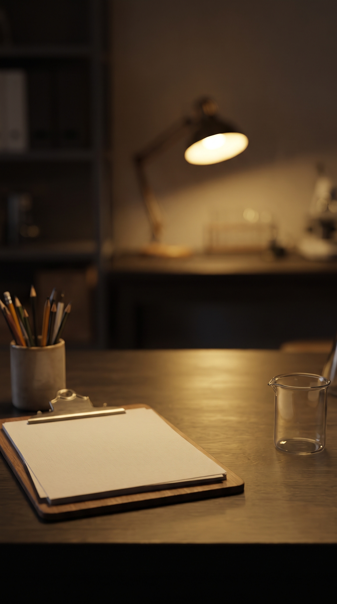
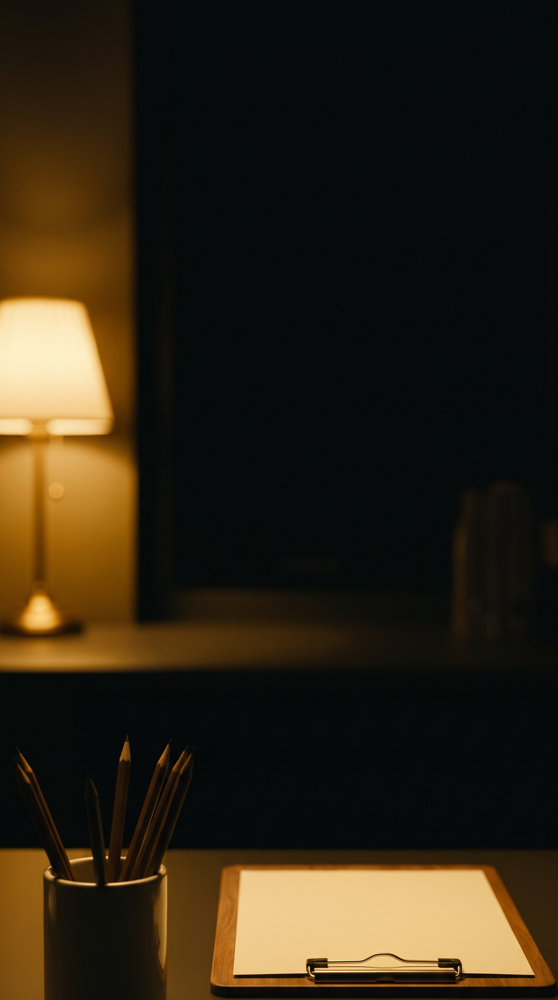
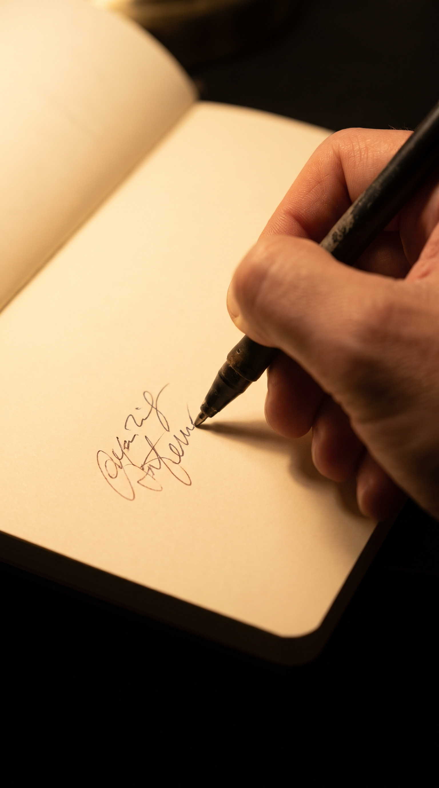

1 · gw_desk_top.jpg
G1 Schreibtisch von oben unter Lampenlicht, Mitte frei fuer die Laborbuchseite; Startbild fuer V1 · image · 1536x2752 · keine Schleife · 2 Credits

Stand 2026-11-02 · Higgsfield Ultra · 40 Bausteine · 104 Credits · Lizenz: Higgsfield Terms of Service section 4.4: 'Company does not claim ownership of any of your Inputs or Outputs, nor does it restrict your commercial use of Outputs.' Rights in exported Outputs survive cancellation. (Wortlaut wie im Scutoria-Paket vom 2026-10-30.)
G1 Schreibtisch von oben unter Lampenlicht, Mitte frei fuer die Laborbuchseite; Startbild fuer V1 · image · 1536x2752 · keine Schleife · 2 Credits
G2 Schreibtisch schraeg (30 Grad), geringe Schaerfentiefe; Startbild fuer V4 · image · 1536x2752 · keine Schleife · 2 Credits

G3 Lesesaal unscharf (Lern-Themen) · image · 1536x2752 · keine Schleife · 2 Credits

G4 Laborbank neutral, unscharf (ohne Stoppuhr, siehe Verworfen) · image · 1536x2752 · keine Schleife · 2 Credits

G5 Karopapier Makro (Textur fuer die Laborbuchseite) · image · 1536x2752 · keine Schleife · 2 Credits

G6 Karteikarte mit radierten Bleistiftspuren (ohne Schrift) · image · 1536x2752 · keine Schleife · 2 Credits

T1 Thumbnail-Grund Schreibtisch, starker Kontrast · image · 1536x2752 · keine Schleife · 2 Credits

T2 Thumbnail-Grund Schreibtisch mit Lichtstreifen · image · 1536x2752 · keine Schleife · 2 Credits

T3 Thumbnail-Grund Lesesaal · image · 1536x2752 · keine Schleife · 2 Credits

T4 Thumbnail-Grund Lesesaal, Lampen oben · image · 1536x2752 · keine Schleife · 2 Credits

T5 Thumbnail-Grund Laborbank · image · 1536x2752 · keine Schleife · 2 Credits

T6 Thumbnail-Grund Laborbank nah · image · 1536x2752 · keine Schleife · 2 Credits

Clip: Handy vibriert neben dem Buch, die Hand zoegert; Startbild ist gw_real_phone_facedown.jpg · video · 1080x1920 · 8.03 s · keine Schleife · 10 Credits

Video kling_o3_flf · Job 240b0f67-a8bd-43c4-abc3-0e1882f00cd7 · 10 Credits
Abnahme Sichtpruefung 03.11.: keine Schrift, kein Logo oder Wappen, kein Gesicht, keine Kinder; Menschen nur von hinten; im Video KI-Darstellung · Nahtfehler erstes/letztes Bild 3.3/255 · Helligkeit t0 7.0/48.0/13.5 %, Mitte 7.1/41.8/12.0 % · Textzone 37.8 %
Video: The smartphone lying face down vibrates and lights up faintly at its edges, the hand near the book hesitates and pauses above the page, then stays on the book, static camera, warm lamp light, no face, no text.
Realbild: Versuchskabine, Person von hinten · image · 1536x2752 · keine Schleife · 2 Credits

Realbild: Hoersaal, Studierende von hinten · image · 1536x2752 · keine Schleife · 2 Credits

Realbild: Hand mit Stift ueber Testbogen · image · 1536x2752 · keine Schleife · 2 Credits

Realbild: Stoppuhr ohne Ziffern in der Hand · image · 1536x2752 · keine Schleife · 2 Credits

Realbild: Haende blaettern im Lehrbuch, Textmarker · image · 1536x2752 · keine Schleife · 2 Credits

Realbild: Person von hinten am Laptop mit Kopfhoerer · image · 1536x2752 · keine Schleife · 2 Credits

Realbild: Haende mit leeren Karteikarten · image · 1536x2752 · keine Schleife · 2 Credits

Realbild: Handy mit Display nach unten neben Lernmaterial (Startbild des Clips) · image · 1536x2752 · keine Schleife · 2 Credits

Realbild: Hand hakt Kaestchen auf leerer Liste ab · image · 1536x2752 · keine Schleife · 2 Credits

Realbild: Leeres Klassenzimmer, leere Tafel · image · 1536x2752 · keine Schleife · 2 Credits

Realbild: Grossraumbuero, Menschen von hinten · image · 1536x2752 · keine Schleife · 2 Credits

Realbild: Wandkalender als Raster ohne Zahlen, Hand setzt Markierung · image · 1536x2752 · keine Schleife · 2 Credits

Realbild: Moderationswand mit leeren Haftzetteln · image · 1536x2752 · keine Schleife · 2 Credits

Realbild: Hand schreibt mit Stift · image · 1536x2752 · keine Schleife · 2 Credits

Realbild: Haende auf Tastatur ohne Beschriftung · image · 1536x2752 · keine Schleife · 2 Credits

Realbild: Gruppe am Stehtisch von hinten · image · 1536x2752 · keine Schleife · 2 Credits

Realbild: Person geht im Flur, von hinten · image · 1536x2752 · keine Schleife · 2 Credits

Realbild: Stempelkarte mit leeren Kreisen im Cafe · image · 1536x2752 · keine Schleife · 2 Credits

Realbild: Unordentlicher Schreibtisch · image · 1536x2752 · keine Schleife · 2 Credits

Realbild: Aufgeraeumter Schreibtisch · image · 1536x2752 · keine Schleife · 2 Credits

Realbild: Studentenzimmer mit Umzugskartons · image · 1536x2752 · keine Schleife · 2 Credits

Realbild: Kinoreihe von hinten, Hand in Popcorntuete · image · 1536x2752 · keine Schleife · 2 Credits

Realbild: Tablet mit abstrakten Farbkacheln · image · 1536x2752 · keine Schleife · 2 Credits

Realbild: Buerofenster mit Blick auf Gruendach · image · 1536x2752 · keine Schleife · 2 Credits

Realbild: Buerofenster mit Blick auf Betondach · image · 1536x2752 · keine Schleife · 2 Credits

Realbild: Marmeladenglaeser ohne Etikett am Probierstand · image · 1536x2752 · keine Schleife · 2 Credits

Realbild: Haende bauen Moebel aus Flachpaket · image · 1536x2752 · keine Schleife · 2 Credits

Quelle: manifest.json und LICENSE.md in diesem Ordner.